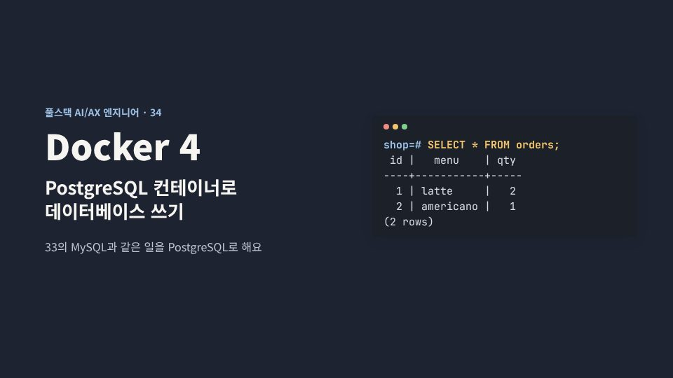
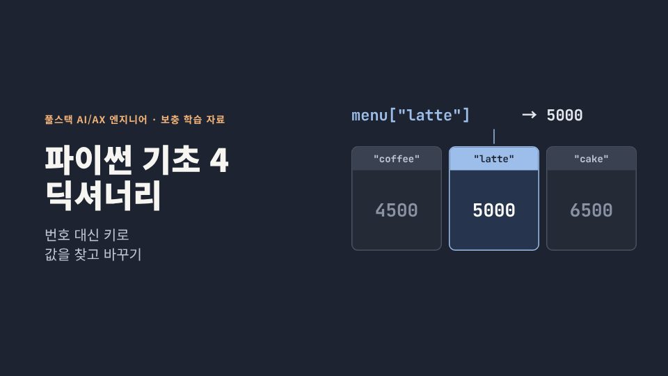

이 챕터를 마치면
- 글자(
CHAR,VARCHAR,TEXT), 정수(SMALLINT,INTEGER,BIGINT), 소수(NUMERIC,REAL,DOUBLE PRECISION),BOOLEAN, 날짜와 시간 자료형의 차이를 말하고 열에 맞게 골라요. INSERT로 여러 줄을 한 번에 넣고, 안 적은 열이NULL(모름)로 비는 것을 봐요.WHERE에 비교(=,<>,>=),AND,OR,IN,BETWEEN,LIKE,ILIKE,IS NULL을 써서 줄을 골라요.AS로 결과 열에 새 이름을 붙이고,price * 3처럼 계산한 값을 열로 꺼내요.DISTINCT로 겹치는 줄을 하나만 남기고,COUNT(*)로 맞는 줄이 몇 개인지 세요.ORDER BY로 줄을 세우고LIMIT,OFFSET으로 잘라요.UPDATE ... SET ... WHERE로 값을 고치고DELETE FROM ... WHERE로 줄을 지워요.RETURNING으로 바뀐 줄을 바로 보고,DROP ... IF EXISTS로 오류 없이 지워요.WHERE를 빼면 모든 줄이 바뀌거나 지워진다는 것을 알고, 고치기 전에 같은WHERE로SELECT부터 해요.
먼저 보고 오면 좋아요
 32표, 행과 열, 기본 키,
32표, 행과 열, 기본 키, CREATE TABLE, INSERT, SELECT 읽기
34docker exec -it pg psql -U postgres, \l, \c, \dt, \d, \q 35
35my-pg 컨테이너, pgdata 볼륨, kant_shop 데이터베이스
15, 22, 23리스트 고르기와 정렬(sorted, key=, 컴프리헨션)과 비교할 때